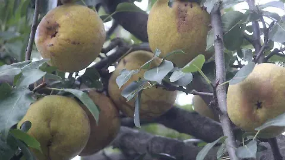
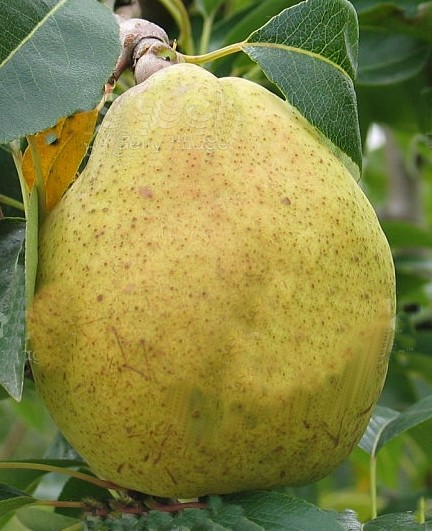
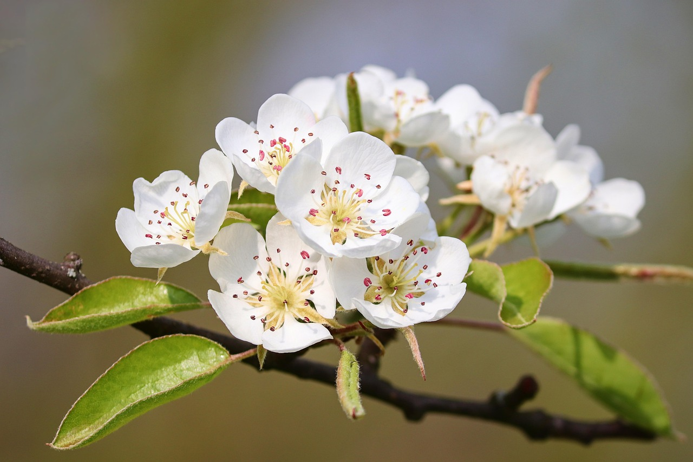
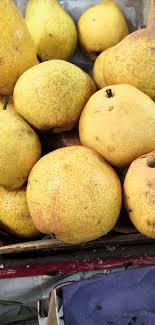
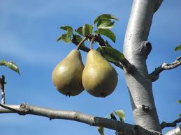

Árbol de Pera
El peral es un árbol frutal que se desarrolla en climas templados y es conocido por producir frutos jugosos y nutritivos.






Tiempo de crecimiento: 4 a 6 años.
Clima ideal: Templado.
Cuidados: Riego constante, poda regular y suelo fértil.
Importancia: Produce frutos saludables y brinda sombra.
⬅ Regresar